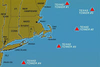
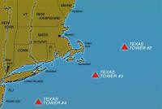

The Texas Towers were a set of off-shore radar facilities used by the United States Air Force during the Cold War that were modeled on the offshore oil drilling platforms first employed off the Texas coast. The platforms were used for radar surveillance of the Atlantic Ocean near the eastern seaboard of the United States from 1958 to 1963.
On January 11, 1954, the USAF approved the construction of 5 Texas Towers as part of the Air Defense System. Here Is A Diagram Of The Texas Tower Locations. Note That Towers #1 And #5 Were Never Built.
Proposed |
|
|
 |
(1) Cashes Ledge (Lat. 42° 53'N., Long. 68° 57'W.,
36-foot depth), 100 miles east of New Hampshire. |
Actually Built |
|
|
 |
(2) Georges Shoal (Lat. 41° 44'N. , Long. 67° 47'W. , 56-foot depth)
, 110 miles east of Cape Cod. (3) Nantucket Shoal (Lat. 40° 45'N., 69° 19'W., 80 foot depth) 100 miles southeast of Rhode Island. (4) Unnamed Shoal (Lat. 39° 48'N., Long. 72° 40'W., 185-foot depth), 84 miles southeast of New York City. |
{kind=link}
{kind=link}